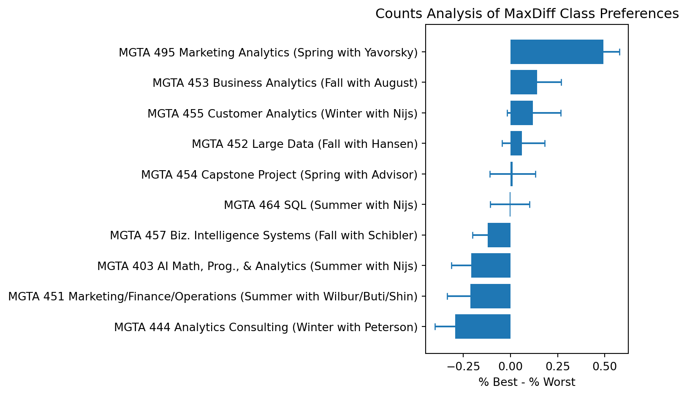
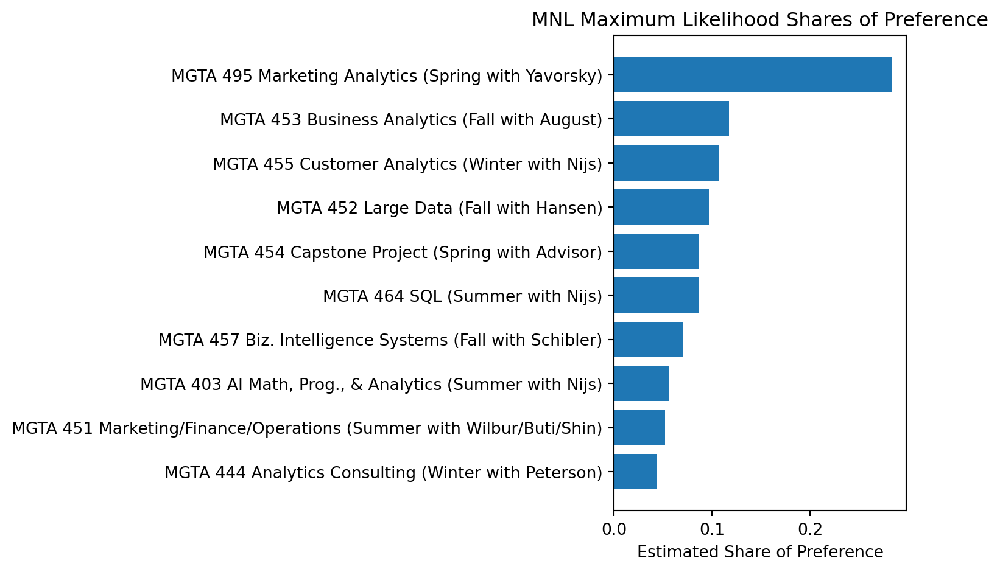
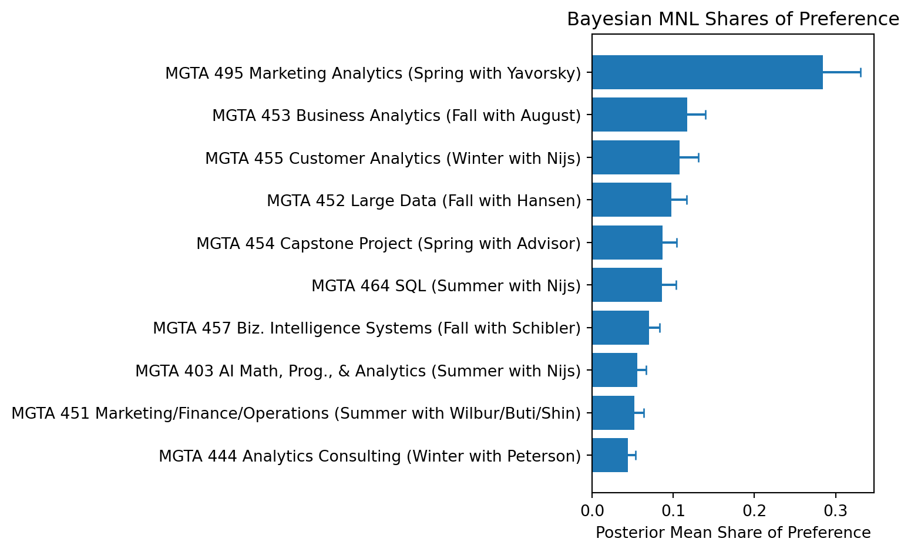

Counts, MLE, and Bayesian Estimation of the MNL Model
Marketing Analytics
MaxDiff
MNL
Bayesian
Author
Lingyuan Meng
Published
May 28, 2026
Introduction
This post analyzes a MaxDiff survey about the 10 core MSBA classes at UCSD Rady. MaxDiff, also called Best-Worst Scaling, asks respondents to make trade-offs instead of giving simple rating scores. On each screen, a student sees a small set of classes and chooses the class they prefer the most and the class they prefer the least.
This method is useful because people are usually better at comparing options than giving exact numerical ratings. For example, two students might both give a class an 8 out of 10, but that number may not mean the same thing for both of them. MaxDiff forces clearer differentiation because each respondent has to choose a best and a worst option from the same set.
In this assignment, I estimate class preferences in three ways. First, I use a simple counts analysis based on how often each class is picked best minus how often it is picked worst. Second, I estimate a multinomial logit model using maximum likelihood. Third, I estimate the same MNL model using a Bayesian Metropolis-Hastings sampler. I expect the three methods to mostly agree on the broad ranking of classes, especially for the highest and lowest ranked classes, but the MNL and Bayesian methods give a more model-based view of preference strength and uncertainty.
The survey data contains one row for each class shown in each MaxDiff task. The response variable is coded as 1 if the class was selected as the most preferred option, -1 if it was selected as the least preferred option, and 0 if it was shown but not selected.
In the raw file, I first check the task structure. The assignment focuses on the 10 MSBA class items. The raw data also contains some extra rows involving item 11, so I remove those rows and keep only complete MaxDiff tasks that show four of the 10 classes and contain one best choice and one worst choice.
# Keep the actual 10-item MaxDiff tasks required for the assignmentvalid_items =set(range(1, 11))valid_tasks = ( choices .groupby(["record_id", "task"]) .filter(lambda g: (len(g) ==4andset(g["item"]).issubset(valid_items)and (g["response"] ==1).sum() ==1and (g["response"] ==-1).sum() ==1and (g["response"] ==0).sum() ==2 ) ))choices_md = valid_tasks.copy()n_respondents = choices_md["record_id"].nunique()tasks_per_respondent = ( choices_md[["record_id", "task"]] .drop_duplicates() .groupby("record_id") .size() .mean())items_per_task = ( choices_md .groupby(["record_id", "task"]) .size() .mean())total_items = labels["item"].nunique()summary_table = pd.DataFrame({"Measure": ["Number of respondents used","Average complete MaxDiff tasks per respondent","Average items per task","Total number of class items" ],"Value": [ n_respondents, tasks_per_respondent, items_per_task, total_items ]})summary_table
Measure
Value
0
Number of respondents used
85.0
1
Average complete MaxDiff tasks per respondent
8.0
2
Average items per task
4.0
3
Total number of class items
10.0
I also check whether every retained MaxDiff task has the expected structure: one best pick, one worst pick, and two unselected options.
Show code
sanity_check = ( choices_md .groupby(["record_id", "task"]) .agg( best_count=("response", lambda x: (x ==1).sum()), worst_count=("response", lambda x: (x ==-1).sum()), neutral_count=("response", lambda x: (x ==0).sum()), total_rows=("response", "size") ) .reset_index())sanity_summary = pd.DataFrame({"Measure": ["Total complete MaxDiff tasks","Tasks with one best choice","Tasks with one worst choice","Tasks with two neutral options","Tasks with four rows" ],"Value": [len(sanity_check), (sanity_check["best_count"] ==1).sum(), (sanity_check["worst_count"] ==1).sum(), (sanity_check["neutral_count"] ==2).sum(), (sanity_check["total_rows"] ==4).sum() ]})sanity_summary
Measure
Value
0
Total complete MaxDiff tasks
680
1
Tasks with one best choice
680
2
Tasks with one worst choice
680
3
Tasks with two neutral options
680
4
Tasks with four rows
680
This check is important because the later MNL model assumes that each task has one clear best choice and one clear worst choice. After filtering to the 10 class items and complete tasks, the data follows the expected MaxDiff structure.
The exposure counts are roughly balanced across the 10 classes, which is what we want in a MaxDiff design. If some classes were shown much more often than others, simple counts would be harder to compare directly.
Counts Analysis
The counts analysis is the simplest way to summarize the MaxDiff results. For each class, I calculate the percentage of times it was picked as best and the percentage of times it was picked as worst. The score is:
A positive score means a class was more often selected as best than worst. A negative score means it was more often selected as worst. A score close to zero means the class is closer to the middle or has mixed reactions.
plot_counts = counts_table.sort_values("score", ascending=True)plt.figure(figsize=(8, 5))plt.barh(plot_counts["class_label"], plot_counts["score"])plt.errorbar( plot_counts["score"], plot_counts["class_label"], xerr=[ plot_counts["score"] - plot_counts["score_low"], plot_counts["score_high"] - plot_counts["score"] ], fmt="none", capsize=3)plt.title("Counts Analysis of MaxDiff Class Preferences")plt.xlabel("% Best - % Worst")plt.ylabel("")plt.tight_layout()plt.show()

The counts analysis gives a quick first look at student preferences. The classes at the top were selected as best more often when shown, while the classes at the bottom were selected as worst more often. This method is easy to understand, but it is mostly descriptive. It does not fully model the choice process behind the best and worst selections.
Show code
top_counts = counts_table.iloc[0]bottom_counts = counts_table.iloc[-1]display(Markdown(f"Based on the counts score, the highest-ranked class is **{top_counts['class_label']}**, "f"while the lowest-ranked class is **{bottom_counts['class_label']}**."))
Based on the counts score, the highest-ranked class is MGTA 495 Marketing Analytics (Spring with Yavorsky), while the lowest-ranked class is MGTA 444 Analytics Consulting (Winter with Peterson).
From MaxDiff Data to MNL Choices
To estimate preferences more formally, I convert the MaxDiff tasks into a multinomial logit model. The MNL model assigns each class a utility coefficient, usually written as \(\beta_j\). A class with a higher \(\beta_j\) has a higher probability of being selected as the best option.
For a task showing four classes, the probability that class \(b\) is picked as best is:
The worst choice is modeled from the remaining three items after removing the best item. Since the worst item is the least preferred, the utilities are flipped:
One important issue is identifiability. Adding the same constant to every \(\beta\) does not change the MNL probabilities. Because of that, I set \(\beta_1 = 0\) as the reference class and estimate the other nine coefficients.
For each task, the log-likelihood adds the log probability of the observed best choice and the log probability of the observed worst choice. The likelihood is:
Here, \(j_b^*\) is the item selected as best, and \(j_w^*\) is the item selected as worst.
Show code
shown_list = task_data["shown"].tolist()best_array = task_data["best_item"].to_numpy(dtype=int)worst_array = task_data["worst_item"].to_numpy(dtype=int)def log_sum_exp(x): x = np.asarray(x, dtype=float) m = np.max(x)return m + np.log(np.sum(np.exp(x - m)))def make_full_beta(beta_free):return np.r_[0.0, beta_free]def loglike(beta_free): beta = make_full_beta(beta_free) total =0.0for shown, best, worst inzip(shown_list, best_array, worst_array): shown_idx = shown -1 best_idx = best -1 worst_idx = worst -1 total += beta[best_idx] - log_sum_exp(beta[shown_idx]) remaining = shown[shown != best] remaining_idx = remaining -1 total += (-beta[worst_idx]) - log_sum_exp(-beta[remaining_idx])return totaldef negative_loglike(beta_free):return-loglike(beta_free)
Show code
start_beta = np.zeros(9)mle_out = minimize( negative_loglike, start_beta, method="BFGS", options={"maxiter": 5000,"gtol": 1e-4 })mle_success = mle_out.successmle_message = mle_out.messagemle_beta_free = mle_out.xmle_beta = make_full_beta(mle_beta_free)# BFGS returns an approximate inverse Hessian for the negative log-likelihood.# This is used as an approximate covariance matrix for the free beta coefficients.ifhasattr(mle_out.hess_inv, "todense"): vcov_free = np.asarray(mle_out.hess_inv.todense())else: vcov_free = np.asarray(mle_out.hess_inv)mle_se = np.r_[np.nan, np.sqrt(np.diag(vcov_free))]mle_share = np.exp(mle_beta) / np.sum(np.exp(mle_beta))mle_table = pd.DataFrame({"item": np.arange(1, 11),"beta_mle": mle_beta,"se_mle": mle_se,"mle_share": mle_share})mle_table = ( mle_table .merge(labels, on="item", how="left") .sort_values("mle_share", ascending=False) .reset_index(drop=True))mle_table["mle_rank"] = np.arange(1, len(mle_table) +1)display(pd.DataFrame({"MLE converged": [mle_success],"Optimizer message": [mle_message]}))mle_table
MLE converged
Optimizer message
0
False
Desired error not necessarily achieved due to ...
item
beta_mle
se_mle
mle_share
class_label
mle_rank
0
9
1.629803
0.132655
0.283890
MGTA 495 Marketing Analytics (Spring with Yavo...
1
1
5
0.744468
0.189548
0.117126
MGTA 453 Business Analytics (Fall with August)
2
2
7
0.656263
0.130343
0.107238
MGTA 455 Customer Analytics (Winter with Nijs)
3
3
4
0.555302
0.184622
0.096939
MGTA 452 Large Data (Fall with Hansen)
4
4
8
0.443279
0.084383
0.086666
MGTA 454 Capstone Project (Spring with Advisor)
5
5
2
0.438011
0.202133
0.086211
MGTA 464 SQL (Summer with Nijs)
6
6
10
0.235900
0.166766
0.070435
MGTA 457 Biz. Intelligence Systems (Fall with ...
7
7
1
0.000000
NaN
0.055633
MGTA 403 AI Math, Prog., & Analytics (Summer w...
8
8
3
-0.066646
0.215739
0.052047
MGTA 451 Marketing/Finance/Operations (Summer ...
9
9
6
-0.238824
0.143294
0.043814
MGTA 444 Analytics Consulting (Winter with Pet...
10
Show code
plot_mle = mle_table.sort_values("mle_share", ascending=True)plt.figure(figsize=(8, 5))plt.barh(plot_mle["class_label"], plot_mle["mle_share"])plt.title("MNL Maximum Likelihood Shares of Preference")plt.xlabel("Estimated Share of Preference")plt.ylabel("")plt.tight_layout()plt.show()

The MLE estimates are easier to interpret after converting the coefficients into shares of preference. These shares sum to 1 across the 10 classes. Compared with the counts analysis, the MNL method uses the full structure of each choice task. It considers not only which item was selected, but also the other items that were shown and not selected.
Show code
top_mle = mle_table.iloc[0]bottom_mle = mle_table.iloc[-1]display(Markdown(f"The MLE model ranks **{top_mle['class_label']}** highest and "f"**{bottom_mle['class_label']}** lowest based on estimated share of preference."))
The MLE model ranks MGTA 495 Marketing Analytics (Spring with Yavorsky) highest and MGTA 444 Analytics Consulting (Winter with Peterson) lowest based on estimated share of preference.
MNL via Bayesian Estimation
Next, I estimate the same MNL model using Bayesian methods. I use the same likelihood as before, but add a weakly informative normal prior:
\[
\boldsymbol{\beta} \sim N(0, 10I)
\]
This prior is centered at zero and is wide enough to let the data drive the estimates. I use a random-walk Metropolis-Hastings sampler. The proposal adds normal noise to the current vector of nine free coefficients.
The acceptance rate is shown above. A reasonable target is usually around 25% to 40%. If the acceptance rate is too low, the proposal step is probably too large. If it is too high, the proposal step is probably too small.
The trace plots are used to check whether the chain is moving around a stable region instead of drifting slowly in one direction. In this run, the traces should look like a fuzzy band after the burn-in period.
plot_bayes = bayes_table.sort_values("bayes_share", ascending=True)plt.figure(figsize=(8, 5))plt.barh(plot_bayes["class_label"], plot_bayes["bayes_share"])plt.errorbar( plot_bayes["bayes_share"], plot_bayes["class_label"], xerr=[ plot_bayes["bayes_share"] - plot_bayes["share_low"], plot_bayes["share_high"] - plot_bayes["bayes_share"] ], fmt="none", capsize=3)plt.title("Bayesian MNL Shares of Preference")plt.xlabel("Posterior Mean Share of Preference")plt.ylabel("")plt.tight_layout()plt.show()

The Bayesian posterior means are close to the maximum likelihood estimates, which makes sense because both methods use the same likelihood. The main benefit of the Bayesian approach is that it gives uncertainty intervals for derived quantities like shares of preference in a direct way. Instead of using an extra approximation, I can calculate shares for every MCMC draw and then summarize the distribution.
Show code
top_bayes = bayes_table.iloc[0]bottom_bayes = bayes_table.iloc[-1]display(Markdown(f"The Bayesian model ranks **{top_bayes['class_label']}** highest and "f"**{bottom_bayes['class_label']}** lowest based on posterior mean share."))
The Bayesian model ranks MGTA 495 Marketing Analytics (Spring with Yavorsky) highest and MGTA 444 Analytics Consulting (Winter with Peterson) lowest based on posterior mean share.
Comparing the Three Methods
The last step is to compare the simple counts analysis, MLE MNL, and Bayesian MNL side by side.
Overall, the three methods tell a similar story. They tend to agree most clearly at the top and bottom of the ranking. The biggest differences usually appear in the middle, where several classes have similar preference levels and small changes in the model can switch the order.
The counts method is useful because it is simple and easy to explain. The MLE MNL method adds a more formal model of how students made choices across different sets of classes. The Bayesian MNL method adds a more natural way to describe uncertainty, especially for shares of preference.
Show code
top_row = comparison_table.sort_values("mle_rank").iloc[0]bottom_row = comparison_table.sort_values("mle_rank").iloc[-1]display(Markdown(f"Using the MLE ranking as the main model-based ranking, the top class is "f"**{top_row['class_label']}** and the lowest-ranked class is "f"**{bottom_row['class_label']}**. The counts and Bayesian results can be compared "f"directly in the table above."))
Using the MLE ranking as the main model-based ranking, the top class is MGTA 495 Marketing Analytics (Spring with Yavorsky) and the lowest-ranked class is MGTA 444 Analytics Consulting (Winter with Peterson). The counts and Bayesian results can be compared directly in the table above.
Discussion
The main substantive result is that MSBA students do not view all core classes equally. Some classes are clearly preferred more often, while others are more often selected as least preferred. This kind of analysis could be useful for understanding which courses students are most excited about, but it should not be interpreted as a perfect measure of course quality. A class might be less preferred because it is difficult, quantitative, or stressful, not necessarily because it is badly designed.
Methodologically, each approach has a different use. Counts analysis is best for a quick dashboard-style summary. It is easy to calculate and easy for a non-technical audience to understand. MLE MNL is better when we want a formal model and standard errors. Bayesian MNL is useful when we want uncertainty intervals on shares or when we want to extend the model later, for example by estimating individual-level preferences.
There are also several caveats. The respondents are a sample of MSBA students, so the results may not generalize to all Rady students or future cohorts. Students may also be influenced by whether they already took a class, how hard they think it is, who teaches it, and what their career goals are. If I had more time, I would compare preferences across different student groups or estimate a hierarchical Bayesian model to see how much preferences vary across individuals.